TDSQL-B v22.6 → TDSQL-B v22.9 共 4 个版本
日期：2026-06-19；报告版本：v1.0
本报告覆盖 4 个版本（TDSQL-B v22.6 → TDSQL-B v22.9）的 5 个 sysbench 场景峰值 QPS 演进。已检出 3 个性能回归点。
| 场景 | 首版 (TDSQL-B v22.6) | 末版 (TDSQL-B v22.9) | 累计变化 |
|---|---|---|---|
| 点查 | 79,275 | 87,703 | +10.6% |
| 只读 | 45,756 | 40,809 | -10.8% |
| 写入 | 59,855 | 62,966 | +5.2% |
| 混合读写 | 42,302 | 41,136 | -2.8% |
| 索引更新 | 13,267 | 13,761 | +3.7% |
点查（oltp_point_select）：TDSQL-B v22.6 → TDSQL-B v22.9，峰值 QPS 79,274.90 → 87,702.72，累计 +10.63%。
只读（oltp_read_only）：TDSQL-B v22.6 → TDSQL-B v22.9，峰值 QPS 45,755.56 → 40,809.21，累计 -10.81%。
混合读写（oltp_read_write）：TDSQL-B v22.6 → TDSQL-B v22.9，峰值 QPS 42,301.62 → 41,135.99，累计 -2.76%。
写入（oltp_write_only）：TDSQL-B v22.6 → TDSQL-B v22.9，峰值 QPS 59,854.62 → 62,966.27，累计 +5.20%。
索引更新（oltp_update_index）：TDSQL-B v22.6 → TDSQL-B v22.9，峰值 QPS 13,266.57 → 13,760.60，累计 +3.72%。
回退：TDSQL-B v22.8 → TDSQL-B v22.9，只读峰值 QPS 下降 21.02%（严格超过 5%）。
| 版本 | 测试时间 | 任务 ID | 数据集 | 时长（秒） |
|---|---|---|---|---|
| TDSQL-B v22.6 | 2026-03-15 10:00:00 | v226_aaa1111_tdsql_intel_x86 | tables=16, table_size=1000000 | 300 |
| TDSQL-B v22.7 | 2026-04-20 10:00:00 | v227_bbb2222_tdsql_intel_x86 | tables=16, table_size=1000000 | 300 |
| TDSQL-B v22.8 | 2026-05-18 10:00:00 | v228_ccc3333_tdsql_intel_x86 | tables=16, table_size=1000000 | 300 |
| TDSQL-B v22.9 | 2026-06-10 10:00:00 | v229_ddd4444_tdsql_intel_x86 | tables=16, table_size=1000000 | 300 |
| 项目 | 来源配置 |
|---|---|
| CPU | Intel(R) Xeon(R) Gold 6133 @ 2.50GHz, 64 cores |
| Memory | 256GB DDR4 |
| Disk | NVMe SSD 3.84TB |
| Network | 25Gbps |
| OS | TencentOS Server 3.1 |
| sysbench_version | 1.0.20 |
硬件仅提供共享 test_env，缺少逐版本环境快照；配置、缓存状态及重复运行信息未提供。
使用 sysbench 1.0.20。按来源 meta.products 列表顺序分析：TDSQL-B v22.6 → TDSQL-B v22.7 → TDSQL-B v22.8 → TDSQL-B v22.9。各场景独立，不合并均值。扫描全部并发档 32, 64, 128, 256, 512, 1000 的 QPS 最大值作为版本峰值。相邻变化率=(当前峰值−前版峰值)/前版峰值×100%；累计变化率=(末版峰值−首版峰值)/首版峰值×100%。仅未舍入变化率 < -5% 标记回退，恰好 -5% 不标记。P95 越低越好，按同场景同并发档分别比较，不用于吞吐回退判定。
共 120 条记录 = 4 版本 × 5 场景 × 6 并发档；键唯一且网格完整，TPS/QPS/P95/P99 空值率均为 0%。数据集均为 tables=16, table_size=1000000，时长均为 300 秒。公平性：并发档和场景逐项对齐，无 STRONG 警告；硬件一致性仅依据共享元数据，未经逐版本独立验证。实际读取 data/iter.json；输入中的旧 source_info 路径仅保留为来源声明，未访问。
| 场景 | 并发 | TPS | QPS | P95 (ms) | P99 (ms) |
|---|---|---|---|---|---|
| oltp_point_select | 32 | 17,628.37 | 17,628.37 | 1.34 | 1.93 |
| oltp_point_select | 64 | 30,815.12 | 30,815.12 | 1.60 | 2.32 |
| oltp_point_select | 128 | 57,083.63 | 57,083.63 | 2.92 | 4.13 |
| oltp_point_select | 256 | 73,536.85 | 73,536.85 | 4.79 | 6.74 |
| oltp_point_select | 512 | 79,274.90 | 79,274.90 | 9.18 | 13.36 |
| oltp_point_select | 1000 | 74,446.31 | 74,446.31 | 18.32 | 25.75 |
| oltp_read_only | 32 | 718.49 | 10,058.87 | 27.04 | 38.77 |
| oltp_read_only | 64 | 1,278.67 | 17,901.44 | 33.62 | 49.08 |
| oltp_read_only | 128 | 2,342.26 | 32,791.62 | 60.48 | 86.87 |
| oltp_read_only | 256 | 3,013.92 | 42,194.87 | 99.92 | 139.53 |
| oltp_read_only | 512 | 3,268.25 | 45,755.56 | 186.43 | 268.72 |
| oltp_read_only | 1000 | 3,087.52 | 43,225.22 | 380.23 | 550.72 |
| oltp_read_write | 32 | 465.41 | 9,308.17 | 43.01 | 62.39 |
| oltp_read_write | 64 | 836.89 | 16,737.90 | 51.79 | 73.84 |
| oltp_read_write | 128 | 1,504.83 | 30,096.57 | 94.02 | 133.04 |
| oltp_read_write | 256 | 1,968.30 | 39,366.02 | 154.34 | 220.67 |
| oltp_read_write | 512 | 2,115.08 | 42,301.62 | 293.50 | 427.59 |
| oltp_read_write | 1000 | 2,013.94 | 40,278.84 | 586.37 | 842.32 |
| oltp_write_only | 32 | 4,487.17 | 13,461.52 | 5.75 | 8.17 |
| oltp_write_only | 64 | 7,878.05 | 23,634.16 | 7.06 | 9.90 |
| oltp_write_only | 128 | 14,373.67 | 43,121.01 | 12.85 | 17.93 |
| oltp_write_only | 256 | 18,800.21 | 56,400.62 | 21.06 | 29.75 |
| oltp_write_only | 512 | 19,951.54 | 59,854.62 | 39.96 | 58.32 |
| oltp_write_only | 1000 | 18,944.61 | 56,833.83 | 79.33 | 112.49 |
| oltp_update_index | 32 | 2,942.85 | 2,942.85 | 8.19 | 11.34 |
| oltp_update_index | 64 | 5,187.32 | 5,187.32 | 9.97 | 14.51 |
| oltp_update_index | 128 | 9,515.00 | 9,515.00 | 18.06 | 25.63 |
| oltp_update_index | 256 | 12,462.94 | 12,462.94 | 29.85 | 43.34 |
| oltp_update_index | 512 | 13,266.57 | 13,266.57 | 55.54 | 79.49 |
| oltp_update_index | 1000 | 12,636.91 | 12,636.91 | 113.47 | 162.73 |
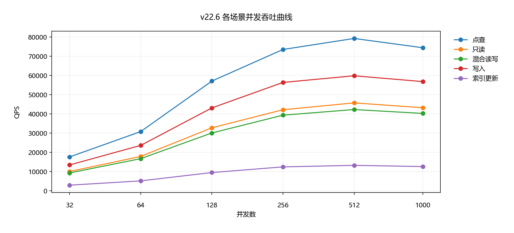
图：TDSQL-B v22.6 五场景曲线；每条线保留全部并发档，不计算跨场景均值
| 场景 | 并发 | TPS | QPS | P95 (ms) | P99 (ms) |
|---|---|---|---|---|---|
| oltp_point_select | 32 | 18,064.61 | 18,064.61 | 1.28 | 1.80 |
| oltp_point_select | 64 | 32,377.42 | 32,377.42 | 1.59 | 2.27 |
| oltp_point_select | 128 | 58,056.90 | 58,056.90 | 2.81 | 3.88 |
| oltp_point_select | 256 | 75,162.40 | 75,162.40 | 4.76 | 6.60 |
| oltp_point_select | 512 | 81,115.42 | 81,115.42 | 8.92 | 12.72 |
| oltp_point_select | 1000 | 76,253.00 | 76,253.00 | 17.57 | 24.33 |
| oltp_read_only | 32 | 748.60 | 10,480.46 | 26.83 | 39.01 |
| oltp_read_only | 64 | 1,322.32 | 18,512.42 | 32.51 | 45.87 |
| oltp_read_only | 128 | 2,409.57 | 33,733.97 | 58.02 | 83.84 |
| oltp_read_only | 256 | 3,134.89 | 43,888.40 | 97.91 | 142.78 |
| oltp_read_only | 512 | 3,374.46 | 47,242.42 | 181.61 | 255.29 |
| oltp_read_only | 1000 | 3,183.87 | 44,574.18 | 365.06 | 525.26 |
| oltp_read_write | 32 | 486.14 | 9,722.74 | 41.79 | 60.87 |
| oltp_read_write | 64 | 853.95 | 17,078.97 | 50.60 | 73.27 |
| oltp_read_write | 128 | 1,575.63 | 31,512.56 | 91.27 | 130.37 |
| oltp_read_write | 256 | 2,042.85 | 40,857.05 | 150.43 | 217.83 |
| oltp_read_write | 512 | 2,177.73 | 43,554.54 | 289.61 | 421.37 |
| oltp_read_write | 1000 | 2,080.48 | 41,609.52 | 579.38 | 805.00 |
| oltp_write_only | 32 | 4,626.78 | 13,880.35 | 5.55 | 7.92 |
| oltp_write_only | 64 | 8,188.91 | 24,566.74 | 6.80 | 9.44 |
| oltp_write_only | 128 | 14,945.44 | 44,836.32 | 12.44 | 17.55 |
| oltp_write_only | 256 | 19,176.81 | 57,530.44 | 20.75 | 29.50 |
| oltp_write_only | 512 | 20,613.50 | 61,840.49 | 37.93 | 53.20 |
| oltp_write_only | 1000 | 19,714.04 | 59,142.11 | 77.81 | 109.11 |
| oltp_update_index | 32 | 3,055.66 | 3,055.66 | 7.91 | 11.43 |
| oltp_update_index | 64 | 5,383.67 | 5,383.67 | 9.73 | 14.01 |
| oltp_update_index | 128 | 9,907.56 | 9,907.56 | 17.75 | 25.36 |
| oltp_update_index | 256 | 12,652.28 | 12,652.28 | 29.03 | 40.46 |
| oltp_update_index | 512 | 13,741.51 | 13,741.51 | 54.79 | 76.47 |
| oltp_update_index | 1000 | 12,881.73 | 12,881.73 | 107.21 | 151.85 |
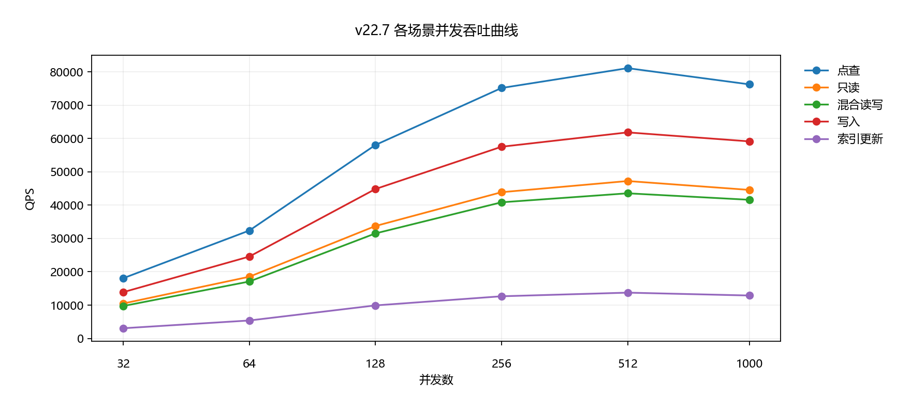
图：TDSQL-B v22.7 五场景曲线；每条线保留全部并发档，不计算跨场景均值
| 场景 | 并发 | TPS | QPS | P95 (ms) | P99 (ms) |
|---|---|---|---|---|---|
| oltp_point_select | 32 | 18,278.75 | 18,278.75 | 1.25 | 1.82 |
| oltp_point_select | 64 | 32,471.90 | 32,471.90 | 1.51 | 2.14 |
| oltp_point_select | 128 | 59,541.51 | 59,541.51 | 2.77 | 4.03 |
| oltp_point_select | 256 | 77,231.84 | 77,231.84 | 4.61 | 6.65 |
| oltp_point_select | 512 | 82,654.44 | 82,654.44 | 8.78 | 12.16 |
| oltp_point_select | 1000 | 77,888.12 | 77,888.12 | 17.35 | 25.11 |
| oltp_read_only | 32 | 804.32 | 11,260.52 | 22.05 | 31.86 |
| oltp_read_only | 64 | 1,433.34 | 20,066.75 | 27.33 | 37.96 |
| oltp_read_only | 128 | 2,604.44 | 36,462.14 | 50.03 | 69.94 |
| oltp_read_only | 256 | 3,381.02 | 47,334.30 | 81.91 | 115.92 |
| oltp_read_only | 512 | 3,690.88 | 51,672.30 | 155.23 | 215.10 |
| oltp_read_only | 1000 | 3,478.38 | 48,697.36 | 310.82 | 446.60 |
| oltp_read_write | 32 | 483.85 | 9,677.09 | 40.93 | 56.73 |
| oltp_read_write | 64 | 858.63 | 17,172.54 | 50.61 | 70.07 |
| oltp_read_write | 128 | 1,567.80 | 31,355.96 | 91.05 | 128.98 |
| oltp_read_write | 256 | 2,052.64 | 41,052.79 | 149.21 | 217.22 |
| oltp_read_write | 512 | 2,205.74 | 44,114.88 | 284.58 | 414.81 |
| oltp_read_write | 1000 | 2,057.24 | 41,144.71 | 569.96 | 787.83 |
| oltp_write_only | 32 | 4,924.53 | 14,773.59 | 5.33 | 7.69 |
| oltp_write_only | 64 | 8,612.52 | 25,837.55 | 6.47 | 9.31 |
| oltp_write_only | 128 | 15,793.29 | 47,379.86 | 11.67 | 16.56 |
| oltp_write_only | 256 | 20,569.11 | 61,707.32 | 19.19 | 27.70 |
| oltp_write_only | 512 | 22,130.10 | 66,390.29 | 35.96 | 50.50 |
| oltp_write_only | 1000 | 20,981.14 | 62,943.41 | 71.55 | 102.35 |
| oltp_update_index | 32 | 3,162.88 | 3,162.88 | 7.57 | 10.88 |
| oltp_update_index | 64 | 5,590.94 | 5,590.94 | 9.46 | 13.22 |
| oltp_update_index | 128 | 10,021.03 | 10,021.03 | 17.07 | 23.65 |
| oltp_update_index | 256 | 13,054.96 | 13,054.96 | 27.62 | 40.00 |
| oltp_update_index | 512 | 14,097.23 | 14,097.23 | 51.91 | 73.63 |
| oltp_update_index | 1000 | 13,385.93 | 13,385.93 | 106.30 | 147.12 |
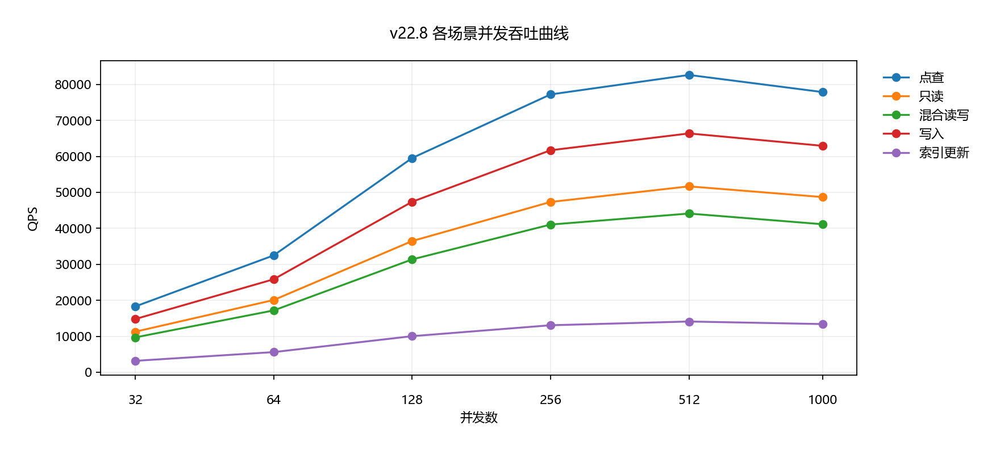
图：TDSQL-B v22.8 五场景曲线；每条线保留全部并发档，不计算跨场景均值
| 场景 | 并发 | TPS | QPS | P95 (ms) | P99 (ms) |
|---|---|---|---|---|---|
| oltp_point_select | 32 | 19,477.53 | 19,477.53 | 1.20 | 1.74 |
| oltp_point_select | 64 | 34,652.67 | 34,652.67 | 1.47 | 2.04 |
| oltp_point_select | 128 | 62,245.67 | 62,245.67 | 2.68 | 3.91 |
| oltp_point_select | 256 | 81,897.04 | 81,897.04 | 4.33 | 6.22 |
| oltp_point_select | 512 | 87,702.72 | 87,702.72 | 8.33 | 11.65 |
| oltp_point_select | 1000 | 82,704.64 | 82,704.64 | 16.50 | 22.95 |
| oltp_read_only | 32 | 654.62 | 9,164.69 | 39.52 | 56.30 |
| oltp_read_only | 64 | 1,147.24 | 16,061.39 | 48.65 | 68.73 |
| oltp_read_only | 128 | 2,113.90 | 29,594.62 | 87.69 | 125.15 |
| oltp_read_only | 256 | 2,758.31 | 38,616.39 | 144.59 | 206.78 |
| oltp_read_only | 512 | 2,914.94 | 40,809.21 | 272.82 | 384.13 |
| oltp_read_only | 1000 | 2,786.76 | 39,014.59 | 540.16 | 777.03 |
| oltp_read_write | 32 | 456.53 | 9,130.60 | 49.18 | 70.22 |
| oltp_read_write | 64 | 816.50 | 16,329.99 | 59.42 | 83.45 |
| oltp_read_write | 128 | 1,481.51 | 29,630.27 | 108.45 | 158.14 |
| oltp_read_write | 256 | 1,931.98 | 38,639.70 | 179.01 | 260.67 |
| oltp_read_write | 512 | 2,056.80 | 41,135.99 | 338.00 | 468.87 |
| oltp_read_write | 1000 | 1,949.90 | 38,998.02 | 675.91 | 977.81 |
| oltp_write_only | 32 | 4,693.13 | 14,079.39 | 5.53 | 7.80 |
| oltp_write_only | 64 | 8,288.54 | 24,865.62 | 6.78 | 9.59 |
| oltp_write_only | 128 | 14,948.16 | 44,844.48 | 12.39 | 17.36 |
| oltp_write_only | 256 | 19,674.20 | 59,022.59 | 20.14 | 28.16 |
| oltp_write_only | 512 | 20,988.76 | 62,966.27 | 37.80 | 54.46 |
| oltp_write_only | 1000 | 19,608.74 | 58,826.22 | 75.03 | 105.88 |
| oltp_update_index | 32 | 3,056.06 | 3,056.06 | 7.98 | 11.41 |
| oltp_update_index | 64 | 5,398.79 | 5,398.79 | 9.70 | 13.88 |
| oltp_update_index | 128 | 9,872.49 | 9,872.49 | 17.50 | 25.44 |
| oltp_update_index | 256 | 12,662.35 | 12,662.35 | 28.58 | 40.07 |
| oltp_update_index | 512 | 13,760.60 | 13,760.60 | 54.57 | 77.84 |
| oltp_update_index | 1000 | 12,893.17 | 12,893.17 | 107.85 | 151.63 |
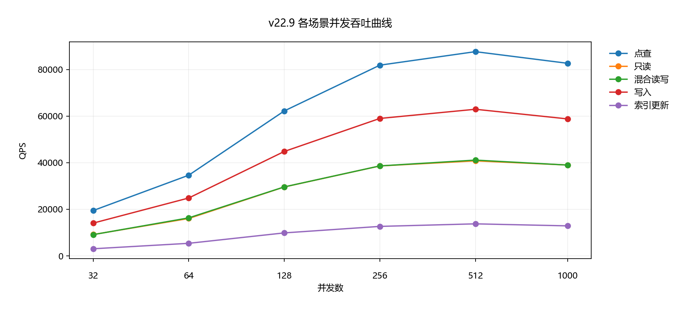
图：TDSQL-B v22.9 五场景曲线；每条线保留全部并发档，不计算跨场景均值
点查（oltp_point_select）：TDSQL-B v22.6 → TDSQL-B v22.9，峰值 QPS 79,274.90 → 87,702.72，累计 +10.63%。
| 版本 | 峰值 QPS | 峰值并发 | 相邻变化 | 标记 |
|---|---|---|---|---|
| TDSQL-B v22.6 | 79,274.90 | 512 | - | - |
| TDSQL-B v22.7 | 81,115.42 | 512 | +2.32% | - |
| TDSQL-B v22.8 | 82,654.44 | 512 | +1.90% | - |
| TDSQL-B v22.9 | 87,702.72 | 512 | +6.11% | - |
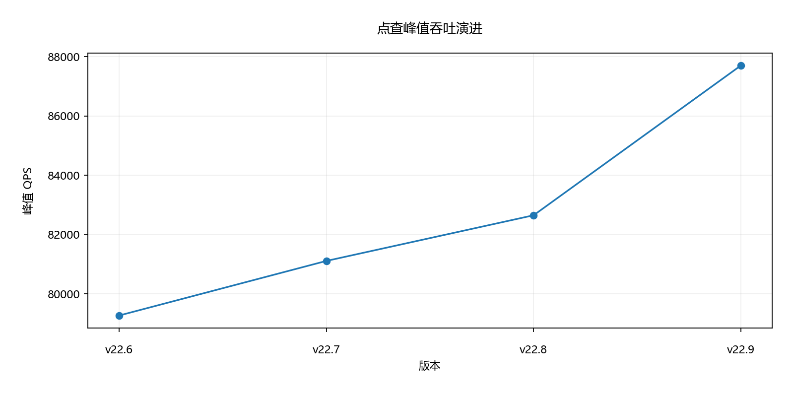
图：点查版本峰值趋势，版本顺序与来源一致
| 并发 | v22.6 | v22.7 | v22.8 | v22.9 |
|---|---|---|---|---|
| 32 | 1.34 | 1.28 | 1.25 | 1.20 |
| 64 | 1.60 | 1.59 | 1.51 | 1.47 |
| 128 | 2.92 | 2.81 | 2.77 | 2.68 |
| 256 | 4.79 | 4.76 | 4.61 | 4.33 |
| 512 | 9.18 | 8.92 | 8.78 | 8.33 |
| 1000 | 18.32 | 17.57 | 17.35 | 16.50 |
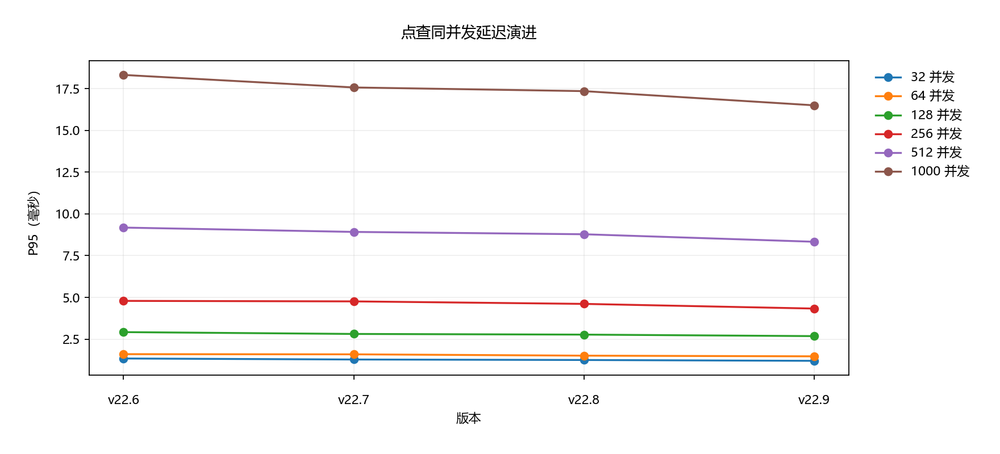
图：点查 P95（毫秒）；六条线分别对应固定并发档，越低越好
只读（oltp_read_only）：TDSQL-B v22.6 → TDSQL-B v22.9，峰值 QPS 45,755.56 → 40,809.21，累计 -10.81%。
| 版本 | 峰值 QPS | 峰值并发 | 相邻变化 | 标记 |
|---|---|---|---|---|
| TDSQL-B v22.6 | 45,755.56 | 512 | - | - |
| TDSQL-B v22.7 | 47,242.42 | 512 | +3.25% | - |
| TDSQL-B v22.8 | 51,672.30 | 512 | +9.38% | - |
| TDSQL-B v22.9 | 40,809.21 | 512 | -21.02% | 回退 |
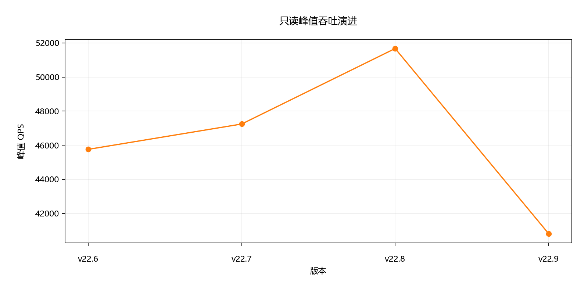
图：只读版本峰值趋势，版本顺序与来源一致
| 并发 | v22.6 | v22.7 | v22.8 | v22.9 |
|---|---|---|---|---|
| 32 | 27.04 | 26.83 | 22.05 | 39.52 |
| 64 | 33.62 | 32.51 | 27.33 | 48.65 |
| 128 | 60.48 | 58.02 | 50.03 | 87.69 |
| 256 | 99.92 | 97.91 | 81.91 | 144.59 |
| 512 | 186.43 | 181.61 | 155.23 | 272.82 |
| 1000 | 380.23 | 365.06 | 310.82 | 540.16 |
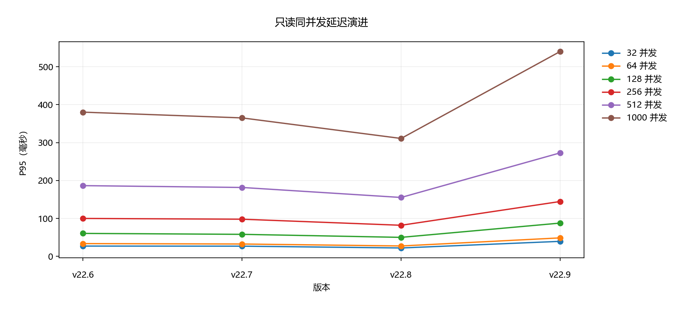
图：只读 P95（毫秒）；六条线分别对应固定并发档，越低越好
混合读写（oltp_read_write）：TDSQL-B v22.6 → TDSQL-B v22.9，峰值 QPS 42,301.62 → 41,135.99，累计 -2.76%。
| 版本 | 峰值 QPS | 峰值并发 | 相邻变化 | 标记 |
|---|---|---|---|---|
| TDSQL-B v22.6 | 42,301.62 | 512 | - | - |
| TDSQL-B v22.7 | 43,554.54 | 512 | +2.96% | - |
| TDSQL-B v22.8 | 44,114.88 | 512 | +1.29% | - |
| TDSQL-B v22.9 | 41,135.99 | 512 | -6.75% | 回退 |
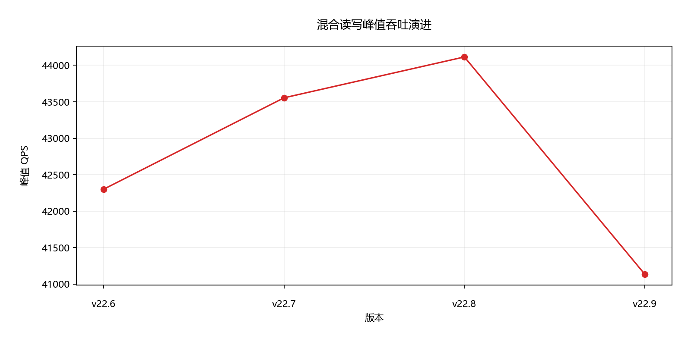
图：混合读写版本峰值趋势，版本顺序与来源一致
| 并发 | v22.6 | v22.7 | v22.8 | v22.9 |
|---|---|---|---|---|
| 32 | 43.01 | 41.79 | 40.93 | 49.18 |
| 64 | 51.79 | 50.60 | 50.61 | 59.42 |
| 128 | 94.02 | 91.27 | 91.05 | 108.45 |
| 256 | 154.34 | 150.43 | 149.21 | 179.01 |
| 512 | 293.50 | 289.61 | 284.58 | 338.00 |
| 1000 | 586.37 | 579.38 | 569.96 | 675.91 |
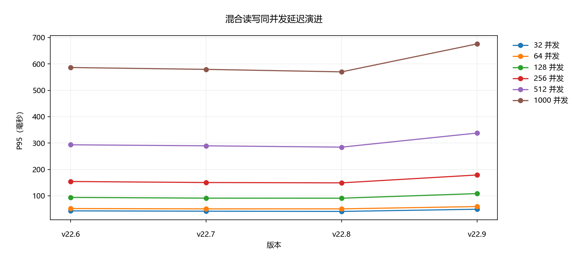
图：混合读写 P95（毫秒）；六条线分别对应固定并发档，越低越好
写入（oltp_write_only）：TDSQL-B v22.6 → TDSQL-B v22.9，峰值 QPS 59,854.62 → 62,966.27，累计 +5.20%。
| 版本 | 峰值 QPS | 峰值并发 | 相邻变化 | 标记 |
|---|---|---|---|---|
| TDSQL-B v22.6 | 59,854.62 | 512 | - | - |
| TDSQL-B v22.7 | 61,840.49 | 512 | +3.32% | - |
| TDSQL-B v22.8 | 66,390.29 | 512 | +7.36% | - |
| TDSQL-B v22.9 | 62,966.27 | 512 | -5.16% | 回退 |
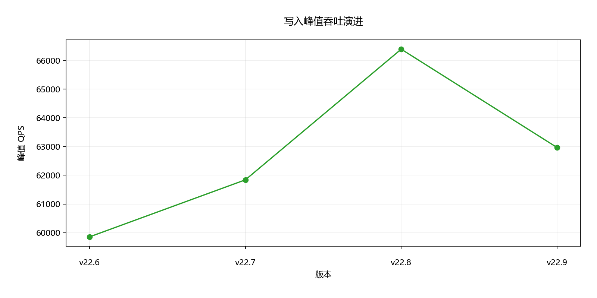
图：写入版本峰值趋势，版本顺序与来源一致
| 并发 | v22.6 | v22.7 | v22.8 | v22.9 |
|---|---|---|---|---|
| 32 | 5.75 | 5.55 | 5.33 | 5.53 |
| 64 | 7.06 | 6.80 | 6.47 | 6.78 |
| 128 | 12.85 | 12.44 | 11.67 | 12.39 |
| 256 | 21.06 | 20.75 | 19.19 | 20.14 |
| 512 | 39.96 | 37.93 | 35.96 | 37.80 |
| 1000 | 79.33 | 77.81 | 71.55 | 75.03 |
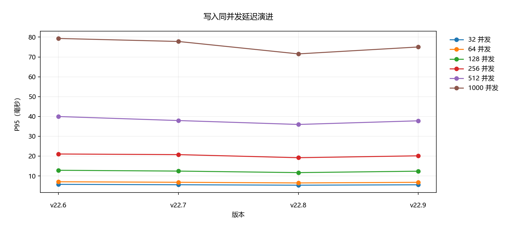
图：写入 P95（毫秒）；六条线分别对应固定并发档，越低越好
索引更新（oltp_update_index）：TDSQL-B v22.6 → TDSQL-B v22.9，峰值 QPS 13,266.57 → 13,760.60，累计 +3.72%。
| 版本 | 峰值 QPS | 峰值并发 | 相邻变化 | 标记 |
|---|---|---|---|---|
| TDSQL-B v22.6 | 13,266.57 | 512 | - | - |
| TDSQL-B v22.7 | 13,741.51 | 512 | +3.58% | - |
| TDSQL-B v22.8 | 14,097.23 | 512 | +2.59% | - |
| TDSQL-B v22.9 | 13,760.60 | 512 | -2.39% | - |
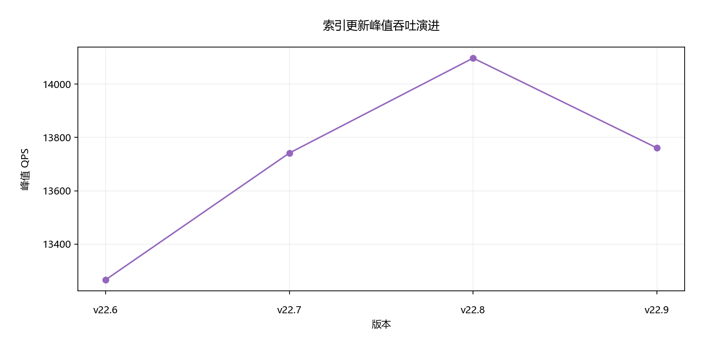
图：索引更新版本峰值趋势，版本顺序与来源一致
| 并发 | v22.6 | v22.7 | v22.8 | v22.9 |
|---|---|---|---|---|
| 32 | 8.19 | 7.91 | 7.57 | 7.98 |
| 64 | 9.97 | 9.73 | 9.46 | 9.70 |
| 128 | 18.06 | 17.75 | 17.07 | 17.50 |
| 256 | 29.85 | 29.03 | 27.62 | 28.58 |
| 512 | 55.54 | 54.79 | 51.91 | 54.57 |
| 1000 | 113.47 | 107.21 | 106.30 | 107.85 |
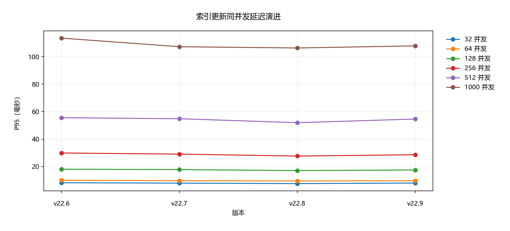
图：索引更新 P95（毫秒）；六条线分别对应固定并发档，越低越好
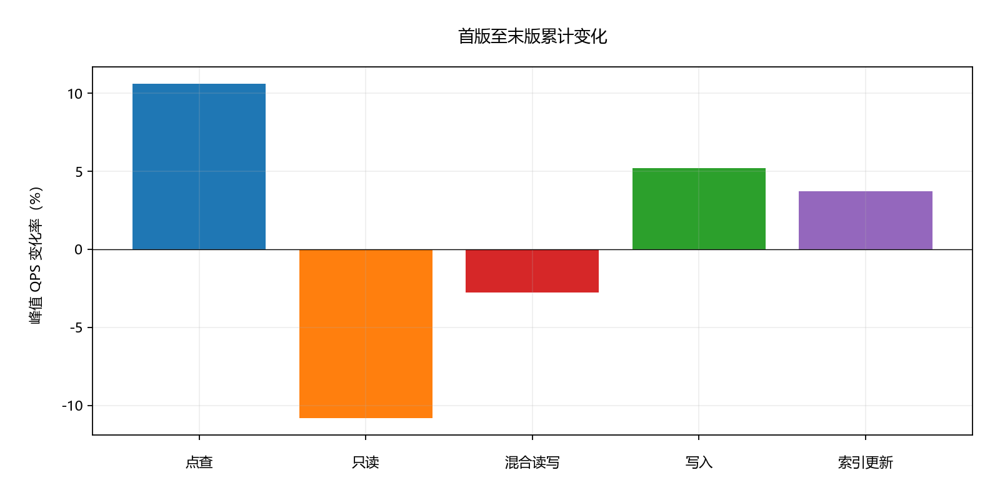
图：每根柱代表单独场景的首末版峰值变化
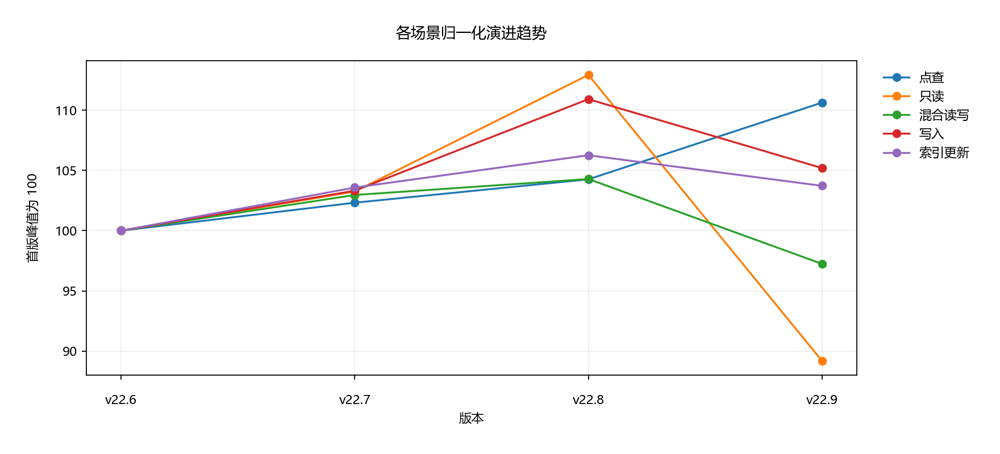
图：每个场景分别以首版为 100 归一化，不形成综合评分
| 前版本 | 当前版本 | 场景 | 前版峰值 QPS | 当前峰值 QPS | 相邻变化 |
|---|---|---|---|---|---|
| TDSQL-B v22.8 | TDSQL-B v22.9 | oltp_read_only | 51,672.30 | 40,809.21 | -21.02% |
| TDSQL-B v22.8 | TDSQL-B v22.9 | oltp_read_write | 44,114.88 | 41,135.99 | -6.75% |
| TDSQL-B v22.8 | TDSQL-B v22.9 | oltp_write_only | 66,390.29 | 62,966.27 | -5.16% |
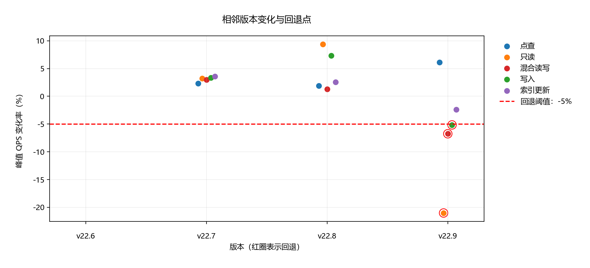
图：全部相邻版本变化；红圈为严格低于 -5% 的回退点
未提供版本变更说明或回退原因，因此不作原因归因。
保留各场景和并发档的独立基线；在相同环境重复测试，确认累计变化可复现，并同步跟踪 P95/P99，避免只依据峰值选择版本。
优先复测峰值跌幅最大的回退场景，并在相同数据集、硬件、并发档和测试时长下核对前后版本变更。采集执行计划、资源使用和等待信息后再判断原因。已检测回退并不等同于已确认故障根因。
仅使用所给 120 条记录；无重复样本、误差区间、逐版本硬件快照、数据库详细参数和缓存状态，不能推断统计显著性或生产表现。回退只依据每场景版本峰值 QPS，不涵盖固定并发吞吐或延迟劣化；后两者请结合全量数据判断。报告时间以用户给定 2026-06-19T16:00:00+08:00 为准。
唯一实际输入：data/iter.json。SHA-256：49c9874206b3a24d216e2befd09af75dce060d5980dc96ea92ecbef4f24663f4。标准化数据及来源旧声明见 data/extracted_data.json；精确计算结果见 data/analysis_results.json；质量检查见 data/quality.json。
输入仅提供 sysbench 版本、数据集和运行时长，未提供完整原始命令、连接参数、预热方式及运行次数，故不补写可执行命令。